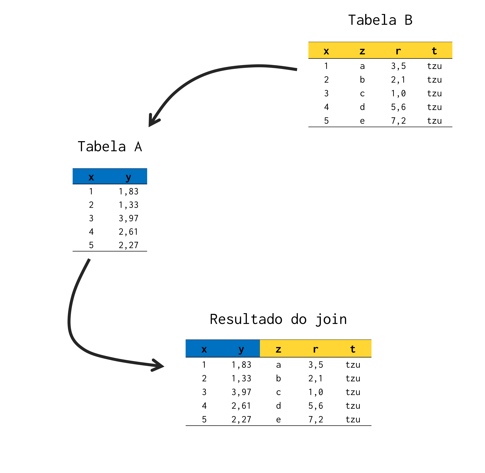
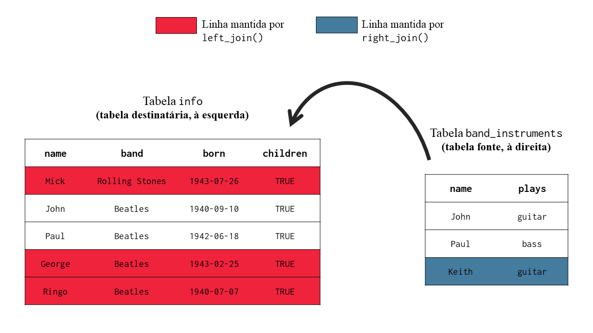

Outer joins são um tópico de simples compreensão para a maioria dos alunos. Entretanto, esse artigo propõe uma segunda abordagem sobre o tema. Tal abordagem foi construída durante uma reformulação recente do capítulo “Introdução a base de dados relacionais” do livro Introdução à Linguagem R: seus fundamentos e sua prática. O ponto de vista apresentado aqui, busca ser estrito, e utiliza essa rigidez como um mecanismo que facilite a memorização do aluno sobre os comportamentos de cada tipo de outer join.
Uma operação de join é nada mais do que uma união entre duas tabelas. Por outro lado, temos uma outra opção de interpretação do resultado dessa operação. De modo que, para produzirmos uma tabela que represente a união entre duas tabelas, poderíamos simplesmente extrair todas as colunas de uma das tabelas, e inserí-las na outra tabela.
Por exemplo, suponha que você possua uma tabela A, que contém duas colunas, chamadas x e y; e uma tabela B, que por sua vez, guarda 4 colunas diferentes, denominadas x, z, r, e t. Perceba que uma das colunas na tabela B, corresponde a mesma coluna x que encontramos na tabela A.
library(tibble)
A <- tibble(
x = 1:5,
y = round(rnorm(5, 2, 1), 2)
)
B <- tibble(
x = 1:5,
z = letters[1:5],
r = c(3.5, 2.1, 1, 5.6, 7.2),
t = "tzu"
)Se você deseja unir as tabelas A e B, você basicamente deseja criar uma nova tabela, que contém todas as cinco colunas dessas duas tabelas (x, y, z, r e t). Portanto, poderíamos imaginar um processo de join, como se estivéssemos transportando todas as colunas da tabela B, para dentro da tabela A. Dessa maneira, temos a tabela abaixo como resultado:
library(dplyr)full_join(A, B, by = "x")## # A tibble: 5 x 5
## x y z r t
## <int> <dbl> <chr> <dbl> <chr>
## 1 1 2.43 a 3.5 tzu
## 2 2 2.13 b 2.1 tzu
## 3 3 0.77 c 1 tzu
## 4 4 0.49 d 5.6 tzu
## 5 5 2.14 e 7.2 tzuCom isso, estamos criando a ideia de que um join possui sempre um sentido e uma direção. Em outras palavras, primeiro, extraímos as colunas da tabela B, e em seguida, acrescentamos essas colunas à tabela A. Repare que estamos sempre partindo da tabela B em direção a tabela A.

Por essa perspectiva, podemos interpretar que, em um join, estamos trazendo todas as colunas de uma tabela secundária, para dentro de nossa tabela principal (ou a nossa tabela de interesse). Temos a opção de chamarmos essas tabelas de: tabela fonte (tabela secundária) e tabela destinatária (tabela principal). Com isso, temos que um join sempre parte da tabela fonte em direção à tabela destinatária.
Essa perspectiva faz sentido com a prática de joins. Pois em qualquer análise, nós comumente trabalhamos com uma tabela “principal”, ou uma tabela que contém os principais dados que estamos analisando. E quando utilizamos algum join, estamos geralmente trazendo colunas de outras tabelas para dentro dessa tabela “principal” (ou tabela “destinatária”, segundo essa perspectiva). Por isso, tenha em mente que um join sempre parte da tabela fonte em direção à tabela destinatária.
Um join natural (inner join) usualmente gera uma perda de observações de ambas as tabelas envolvidas no processo. Em contrapartida, um join do tipo outer (isto é, um outer join), busca delimitar qual das duas tabelas será preservada no resultado. Ou seja, um outer join busca manter as linhas de pelo menos uma das tabelas envolvidas, no resultado do join.
Temos três tipos principais de outer joins, que são left join, right join e full join. O full join é o mais simples de se compreender, pois ele busca manter todas as linhas de ambas as tabelas empregadas. Logo, mesmo que haja alguma observação não encontrada em uma das tabelas, ela será preservada no produto final da operação.
No entanto, left join e right join buscam conservar as linhas de apenas uma das tabelas utilizadas no join. Nesse ponto, muitos professores diriam algo como: “se temos desejamos aplicar um join entre as tabelas A e B, um left join irá manter as linhas da tabela A e um right join vai manter as linhas da tabela B”. Outros professores ainda tentariam dizer: “left join irá manter as linhas da tabela à esquerda, enquanto um right join vai manter as linhas da tabela à direita”. Porém, certa confusão pode ser facilmente aplicada em ambas alternativas. Digo, um aluno pode facilmente enfrentar a seguinte questão: “:thinking: Uhmm… Eu não me lembro muito bem. Um left join mantém as linhas da tabela A? Ou são as linhas da tabela B?”; ou então, “:thinking: Pera! Mas qual das duas tabelas está a direita?”.
Com isso, segundo a perspectiva adotada nesse artigo, podemos entender que, um left join e um right join buscam manter as linhas da tabela destinatária e da tabela fonte, respectivamente. Dessa forma, ao utilizar um right join ou um left join, você deve se questionar o seguinte: “Eu quero manter as linhas de minha tabela principal (tabela destinatária)? Ou da tabela secundária (tabela fonte), de onde estou extraindo as novas colunas?”. Logo, se você deseja manter, por exemplo, as linhas de sua tabela principal (tabela destinatária), que é o que ocorre na maioria das vezes, você sabe agora que você precisa utilizar um left join.
Em uma representação visual, podemos reproduzir abaixo a imagem inicial desse artigo, que marca as linhas mantidas por cada um desses dois tipos de join.
